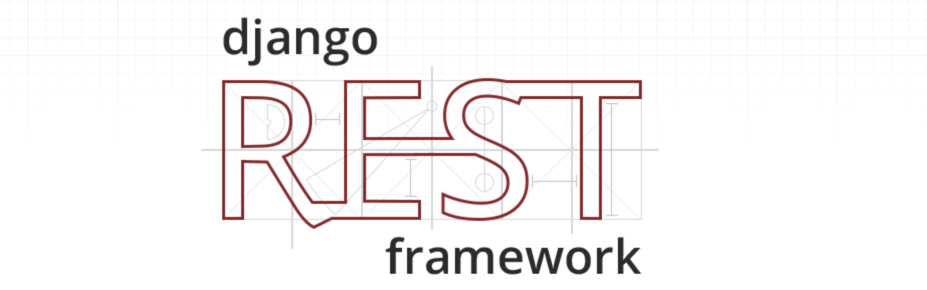

Django REST framework 简介
- 在序列化与反序列化时，虽然操作的数据不尽相同，但是执行的过程却是相似的，也就是说这部分代码是可以复用简化编写的。
- 在开发REST API的视图中，虽然每个视图具体操作的数据不同，但增、删、改、查的实现流程基本套路化，所以这部分代码也是可以复用简化编写的：
- 增：校验请求数据 -> 执行反序列化过程 ->保存数据库 ->将保存的对象序列化并返回
- 删：判断要删除的数据是否存在 -> 执行数据库删除
- 改：判断要修改的数据是否存在 ->校验请求的数据 -> 执行反序列化过程 ->保存数据库 ->将保存的对象序列化并返回
- 查：查询数据库 -> 将数据序列化并返回
Django REST framework可以帮助我们简化上述两部分的代码编写，大大提高REST API的开发速度。
认识Django REST framework

Django REST framework 框架是一个用于构建Web API 的强大而又灵活的工具。
通常简称为DRF框架 或 REST framework。
DRF框架是建立在Django框架基础之上，由Tom Christie大牛二次开发的开源项目。
特点
- 提供了定义序列化器Serializer的方法，可以快速根据 Django ORM 或者其它库自动序列化/反序列化；
- 提供了丰富的类视图、Mixin扩展类，简化视图的编写；
- 丰富的定制层级：函数视图、类视图、视图集合到自动生成 API，满足各种需要；
- 多种身份认证和权限认证方式的支持；
- 内置了限流系统；
- 直观的 API web 界面；
- 可扩展性，插件丰富
资料：